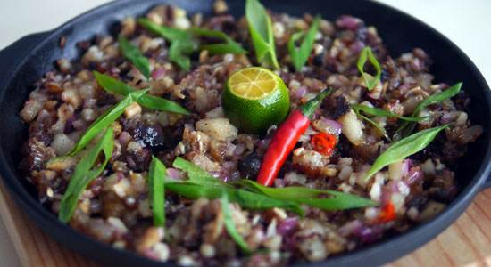

Sisig
Pork sisig is a popular Filipino dish. It can be considered as a main dish or an appetizer. The composition of this dish is mainly of pig’s parts such as minced pork meat, ears, and face. Chicken liver, onions, and chili peppers are also added.
Recipe
- Pork meat
- Calamansi
- Garlic
- Onion
- Soy sause
- Pepper
- Chili
Procedures
- Slice the pork meet in to a thin slice and set a side.
- Mix calamansi and soy sause and set a side.
- Cook the onion and garlic to the hot pot then add the pork meat.
- After you cook the meat add the pepper,chili,calamansi and soy sause.
- After you mix all the ingredient it's ready to served.